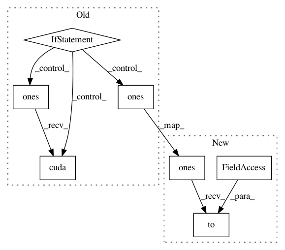

1da20c693ac9f4cf345ddd795d99aa028e011ee8,model/uisrnn.py,UISRNN,__init__,#UISRNN#,49
Before Change
def __init__(self, args, input_dim, observation_dim, transition_bias):
sigma2 = .1 if args.sigma2 is None else args.sigma2
if torch.cuda.is_available():
self.rnn_model = NormalRNN(input_dim, args.rnn_hidden_size,
args.rnn_depth, args.rnn_dropout,
observation_dim).cuda()
self.rnn_init_hidden = nn.Parameter(
torch.zeros(1, args.rnn_hidden_size).cuda())
self.sigma2 = nn.Parameter(sigma2 * torch.ones(observation_dim).cuda())
else:
self.rnn_model = NormalRNN(input_dim, args.rnn_hidden_size,
args.rnn_depth, args.rnn_dropout,
observation_dim)
self.rnn_init_hidden = nn.Parameter(torch.zeros(1, args.rnn_hidden_size))
self.sigma2 = nn.Parameter(sigma2 * torch.ones(observation_dim))
self.transition_bias = transition_bias
def save(self, filepath):
Save the model to a file.
After Change
torch.zeros(1, args.rnn_hidden_size).to(self.device))
sigma2 = .1 if args.sigma2 is None else args.sigma2
self.sigma2 = nn.Parameter(
sigma2 * torch.ones(observation_dim).to(self.device))
self.transition_bias = transition_bias
def save(self, filepath):
In pattern: SUPERPATTERN
Frequency: 3
Non-data size: 7
Instances
Project Name: google/uis-rnn
Commit Name: 1da20c693ac9f4cf345ddd795d99aa028e011ee8
Time: 2018-10-25
Author: aonan@aonan.nyc.corp.google.com
File Name: model/uisrnn.py
Class Name: UISRNN
Method Name: __init__
Project Name: jalola/improved-wgan-pytorch
Commit Name: 20b6d026a6eee21e9fed71957caf47f26f68fcde
Time: 2018-05-09
Author: waterstorm64@gmail.com
File Name: congan_train.py
Class Name:
Method Name: calc_gradient_penalty
Project Name: jalola/improved-wgan-pytorch
Commit Name: 20b6d026a6eee21e9fed71957caf47f26f68fcde
Time: 2018-05-09
Author: waterstorm64@gmail.com
File Name: gan_train.py
Class Name:
Method Name: calc_gradient_penalty